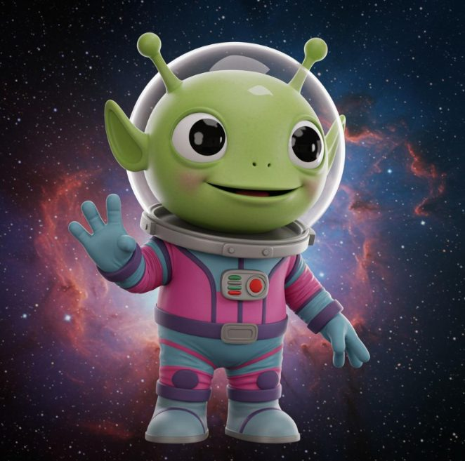

Simulated transmission active (Configure GEMINI_API_KEY in .env for live neural link).

JAADOO
Transceiver listening from Sector 7-G
Zorp! Transmission received. My saucer is in high orbit above your quadrant. I have thousands of questions about your species. What do you call yourself, Earthling?
Sector 7-G Link•Orbit Time
Enter to send • Shift+Enter for new line
Delete this transmission?
All messages in this conversation will be erased from the ship's memory. This cannot be undone.